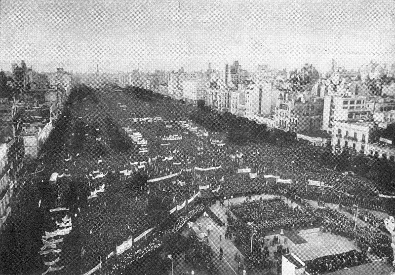

"Dia del Trabajo

El Día Internacional de los Trabajadores o Primero de Mayo es la fiesta por antonomasia del movimiento obrero mundial. Es una jornada que se ha utilizado habitualmente para realizar diferentes reivindicaciones sociales y laborales a favor de las clases trabajadoras por parte, fundamentalmente, de los movimientos socialistas, anarquistas y comunistas, entre otros.
Desde su establecimiento en la mayoría de países (aunque la consideración de día festivo fue en muchos casos tardía) por acuerdo del Congreso Obrero Socialista de la Segunda Internacional, celebrado en París en 1889, es una jornada de lucha reivindicativa y de homenaje a los Mártires de Chicago. Estos sindicalistas anarquistas fueron ejecutados en Estados Unidos por participar en las jornadas de lucha por la consecución de la jornada laboral de ocho horas, que tuvieron su origen en la huelga iniciada el 1 de mayo de 1886 y su punto álgido tres días más tarde, el 4 de mayo, en la Revuelta de Haymarket. A partir de entonces se convirtió en una jornada reivindicativa de los derechos de los trabajadores en sentido general que es celebrada en mayor o menor medida en todo el mundo.
En Estados Unidos, Canadá y otros países no se celebra esta conmemoración. En su lugar se celebra el Labor Day el primer lunes de septiembre en un desfile realizado en Nueva York y organizado por la Noble Orden de los Caballeros del Trabajo (Knights of Labor, en inglés). El presidente estadounidense Grover Cleveland auspició la celebración en septiembre por temor a que la fecha de mayo reforzase el movimiento socialista en los Estados Unidos desde 1882. Canadá se unió a conmemorar el primer lunes de septiembre en vez del primero de mayo a partir de 1894.